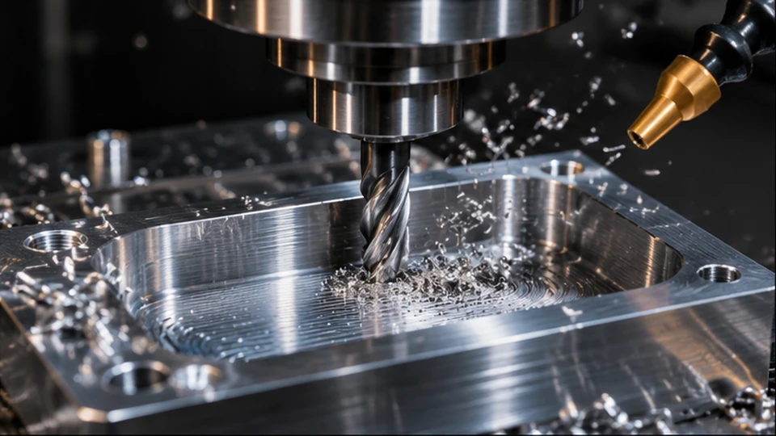
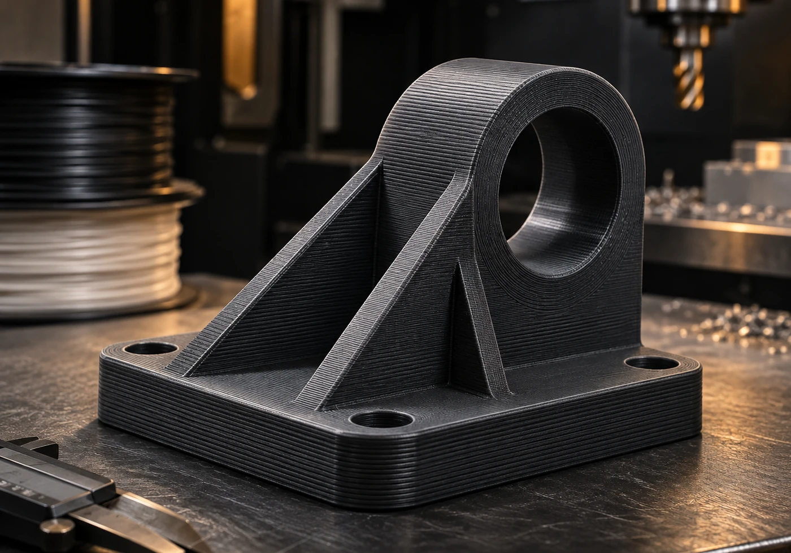
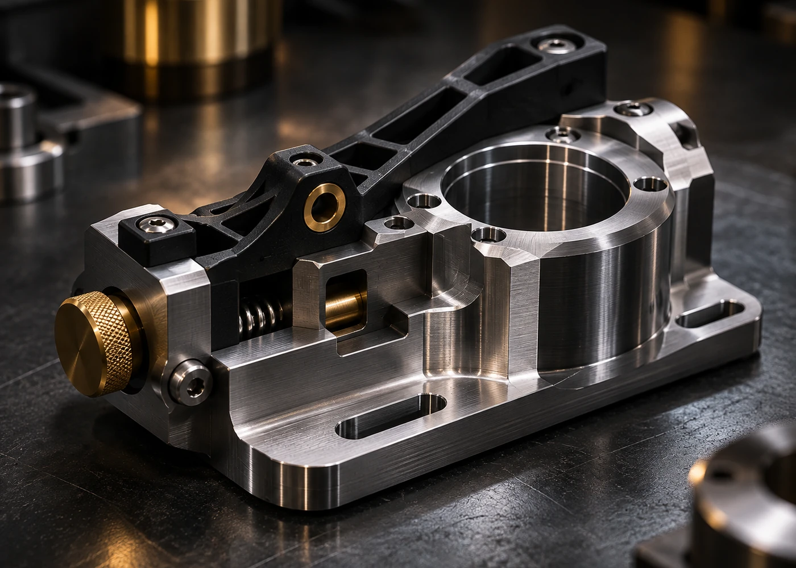
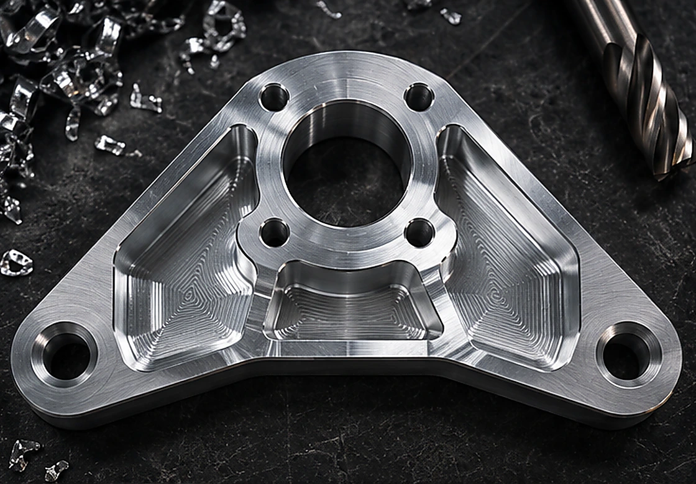
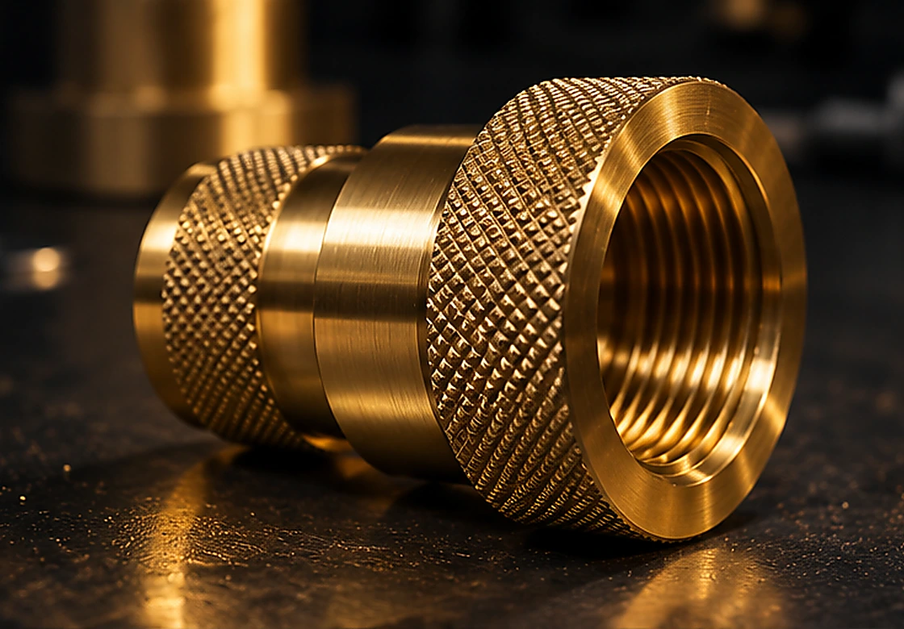
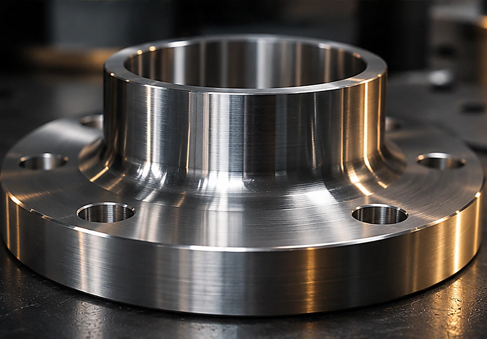
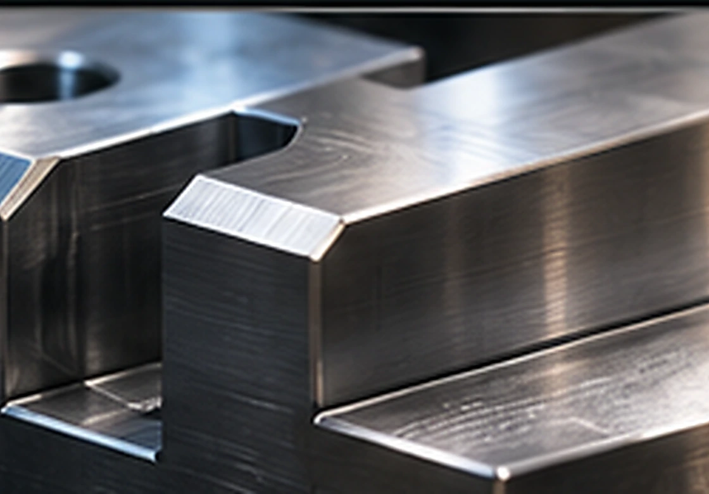
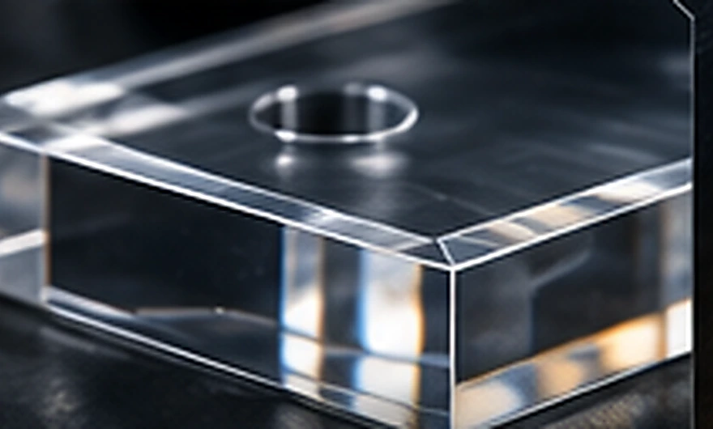
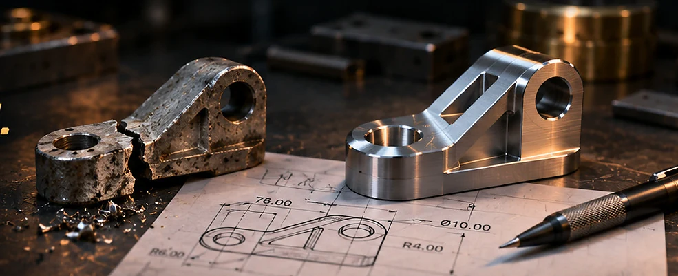

CNC-BEARBEJDNINGCNC-fræsning og -drejning, opspænding og bearbejdningsstrategier til specialemner.FINMEKANIK / PROTOTYPER / PROBLEMLØSNING
DIT PROBLEM.
MIN UDFORDRING.
En del, der er gået i stykker? En idé, der mangler en løsning? Datum Prototyping er mit personlige projekt inden for finmekanik, prototyper og teknisk problemløsning. Jeg holder af at undersøge det, der ikke har en oplagt standardløsning.
N Y S G E R R I G H E DH Å N D V Æ R KP R Æ C I S I O N
02 / KOMPETENCER
DET JEG ARBEJDER MED
En kombination af moderne CNC, klassisk håndværk, 3D-print og digital udvikling. Jeg vælger tilgang ud fra opgaven — ikke omvendt.
 MANUEL BEARBEJDNINGManuel fræsning og drejning med fokus på maskinforståelse, tilpasning og håndværk.
MANUEL BEARBEJDNINGManuel fræsning og drejning med fokus på maskinforståelse, tilpasning og håndværk. CAD / CAMFusion 360 til 3D-konstruktion, CAD-modellering og CAM-programmering.
CAD / CAMFusion 360 til 3D-konstruktion, CAD-modellering og CAM-programmering.
3D-PRINTFDM-print til formstudier, pasformsprøver, testemner og funktionsafprøvning.
TEKNISK UDVIKLINGUndersøgelse af defekte dele, tilpasninger, specialkonstruktioner og nye løsninger.03 / MATERIALER
MATERIALER JEG ARBEJDER MED
Fra metaller til tekniske plasttyper og 3D-printmaterialer — materialevalg er en del af at finde den rigtige løsning.
Primære materialer

METALALUMINIUMLet, alsidigt og præcist.
METALMESSINGKarakterfuldt med fin finish.
METALRUSTFRIT STÅLRobust og korrosionsbestandigt.Øvrige materialer
 METALALM. STÅLStærkt og anvendeligt til mange mekaniske løsninger.
METALALM. STÅLStærkt og anvendeligt til mange mekaniske løsninger.
METALVÆRKTØJSSTÅLNår hårdhed og slidstyrke er vigtige. PLASTNYLONSejt og funktionelt til tekniske dele.
PLASTNYLONSejt og funktionelt til tekniske dele. PLASTPOM / DELRINStabilt, præcist og velegnet til mekaniske komponenter.
PLASTPOM / DELRINStabilt, præcist og velegnet til mekaniske komponenter.
PLASTAKRYLTransparent materiale med skarpe kanter og ren finish.3D-printmaterialer
Til FDM-prototyper og testemner arbejder jeg især med materialer, der giver mening til formstudier, funktionsafprøvning og mere robuste print.
FDM / TERMOPLAST
PLA
Hurtige prototyper, modeller og tidlige afprøvninger.
FDM / TERMOPLAST
PETG
Seje funktionsdele og emner, der skal tåle mere end en ren formtest.
FDM / TERMOPLAST
ASA
Slagfaste emner til mere krævende brug, også hvor UV og vejr spiller ind.
04 / MIN TILGANG
FØRST FORSTÅ.
SÅ FINDE EN VEJ.
Jeg går til opgaver med nysgerrighed, værkstedslogik og lysten til at finde ud af, hvordan noget kan lade sig gøre — også når svaret ikke ligger lige for.

01 / FORSTÅ
UNDERSØGE PROBLEMET
Hvad er udfordringen? Hvad virker, hvad virker ikke — og hvad er vigtigst at løse?
02 / UNDERSØGE
UDFORSKE MULIGHEDERNE
Jeg undersøger idéer, alternative konstruktioner, metoder og materialer.
03 / AFPRØVE
AFPRØVE OG FORBEDRE
Jeg tester, justerer og undersøger videre, indtil en løsning giver mening i praksis.
FEJLFINDINGEKSPERIMENTERFORSTÅ HVORFORFINDE MULIGHEDER
05 / OM DATUM
BAG DATUM PROTOTYPING
Datum Prototyping er mit personlige projekt, drevet af en stor interesse for finmekanik, præcision og tekniske udfordringer. Jeg trives i krydsfeltet mellem idé, teknik og det fysiske emne — især når opgaven kræver lidt ekstra omtanke.
Det handler ikke om at kunne alt på forhånd. Det handler om at være nysgerrig nok til at undersøge, eksperimentere og lære noget undervejs.

PRÆCISIONGennemtænkte løsninger og fokus på detaljen.
NYSGERRIGHEDEn lyst til at undersøge, lære og finde nye veje.
PROTOTYPERFra idé og test til noget konkret og funktionelt.
UDFORDRINGERUsædvanlige opgaver er ofte de mest interessante.
BAGGRUND /FINMEKANIKER UNDER UDDANNELSECNC & MANUEL BEARBEJDNINGFUSION 360 / CAD-CAM3D-PRINT / PROTOTYPER
06 / KONTAKT
LAD OS TAGE
EN SNAK.
Har du en idé, et ødelagt emne eller en teknisk udfordring, du gerne vil drøfte? Du er velkommen til at skrive — også selvom du ikke har en færdig tegning.
datumprototyping@gmail.com
DET HJÆLPER, HVIS DU FORTÆLLER LIDT OM:
Hvad er idéen, delen eller problemet?
Hvad skal delen eller løsningen kunne?
Har du billeder, skitser eller tegninger, må de gerne vedhæftes i din egen mail.
Eventuelle mål, materialer, krav eller tidsramme, hvis du kender dem.
Du behøver ikke kende alle de tekniske detaljer. Hjemmesiden har ingen kontaktformular eller beskedfunktion. Kontakt sker udelukkende via din egen e-mail.